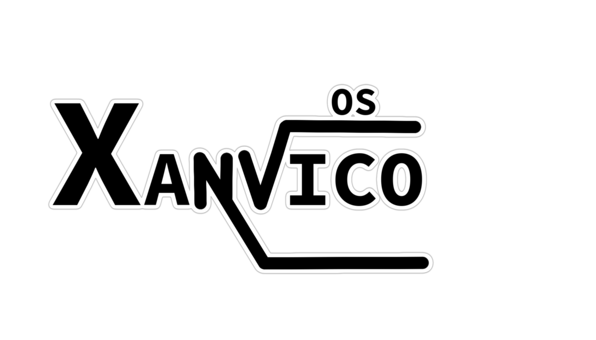

Home
|
Blog
|
XanvicOS
|
Contattami
:)
Benvenuto nella sezione XanvicOS dell'archivio di Vinceale7082!
/a>
Qui prossimamente sarà hostata la repository git di XanvicOS e GitHub sarà considerata la repository che userò se qualcosa andrà storto con il server.
Issues e pull request saranno accettate anche da GitHub.
~Vincenzo Aleksey Brocato